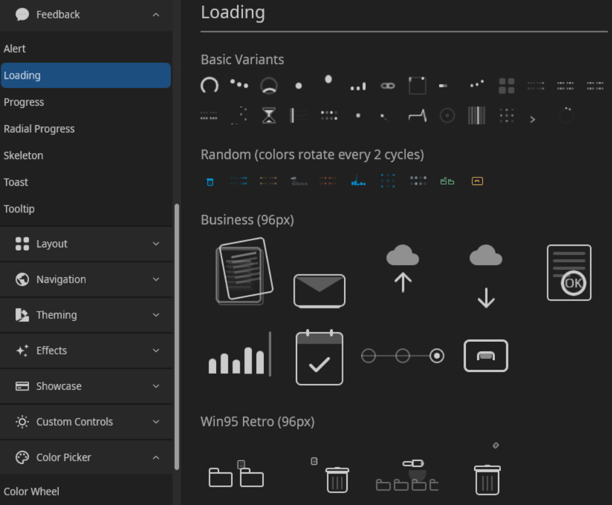

DaisyLoading provides animated loading indicators with 27 different animation styles, 5 size options, and 9 color variants. The control includes standard DaisyUI animations, creative terminal-inspired variants, Matrix/retro variants, and unique special effect variants. All animations scale properly across all sizes using Viewbox-based rendering.

Key Feature: DaisyLoading includes built-in accessibility support for screen readers via theAccessibleText property and proper automation peers.
| Variant | Description |
|---|---|
| Spinner | Classic rotating arc animation (default). Smooth 270° arc that rotates continuously. |
| Dots | Three dots bouncing vertically with staggered timing, creating a wave-like effect. |
| Ring | Rotating 90° arc with a subtle background track showing the full circle. |
| Ball | Single ball bouncing with squash/stretch deformation for a playful effect. |
| Bars | Three vertical bars with staggered height animation (audio equalizer style). |
| Infinity | Infinity symbol (∞) with animated dash offset creating a flowing path effect. |
| Variant | Description |
|---|---|
| Orbit | Dots orbiting around a square border (npm/yarn terminal-style). Three dots with trailing opacity follow the square's perimeter: top → right → bottom → left. |
| Snake | Five segments moving back and forth horizontally with staggered delays, creating a "centipede" or "caterpillar" crawling effect. |
| Pulse | Sonar/heartbeat style - a center dot gently pulses while two rings expand outward and fade, creating a radar ping effect. |
| Wave | Five dots moving in a smooth sine wave pattern with staggered phases, reminiscent of audio equalizers or water ripples. |
| Bounce | Four squares in a 2×2 grid that gently highlight in clockwise sequence. Uses soft opacity transitions (0.25 → 0.7) to avoid harsh flashing. |
| Variant | Description |
|---|---|
| Matrix | Colon-dotted pattern (::: :::) with a smooth wave of brightness traveling left to right. Each "colon" is two vertically stacked dots, grouped in sets of 3 with gaps between groups. |
| MatrixInward | Same colon pattern but the wave starts from the center (inner dots) and moves outward to the edges. Creates a "burst from center" effect. |
| MatrixOutward | Same colon pattern but the wave starts from the edges (outer dots) and converges toward the center. Creates a "closing in" effect. |
| MatrixVertical | Same colon pattern but the wave moves vertically - all top dots light up together, then all bottom dots. Creates a vertical "blink" effect. |
| Variant | Description |
|---|---|
| MatrixRain | Digital rain inspired by "The Matrix" movie. Four columns of falling dots at different speeds, each with a bright leading dot and dimmer trailing dot. |
| Hourglass | Classic hourglass timer with flowing sand animation. Top sand depletes, stream flows through the middle, bottom sand accumulates. 2-second cycle. |
| SignalSweep | Oscilloscope-style bar sweeping left to right with a fading gradient trail. Includes subtle horizontal grid lines. |
| BitFlip | 4×2 grid of dots flipping on/off in pseudo-random binary patterns, like data streaming through a register. |
| PacketBurst | Center dot pulses while four particles shoot outward to all edges (left, right, up, down), mimicking network packet transmission. |
| CometTrail | Bright dot orbiting in a circle with three trailing dots that fade behind it, creating a comet-like tail effect. |
| Heartbeat | EKG/heart monitor-style pulse line scrolling horizontally with characteristic heartbeat spikes. |
| TunnelZoom | Three concentric rings expanding outward from center and fading, creating a warp tunnel/zoom effect. |
| GlitchReveal | Six vertical columns flashing in random-seeming patterns, mimicking terminal glitch/interference effects. |
| RippleMatrix | 3×3 dot grid (9 dots) with brightness rippling outward from the center dot to adjacent dots then corner dots. |
| CursorBlink | Classic CLI terminal prompt (>) with a blinking block cursor. Simple and nostalgic. |
| CountdownSpinner | 12 dots arranged in a clock face pattern, lighting up sequentially like clock hands ticking. |
DaisyLoading is designed to be accessible to users of assistive technologies like screen readers. The visual animation is decorative; the accessibility layer provides meaningful information.
1. AutomationPeer: The control exposes itself as a ProgressBar to assistive technologies via a custom DaisyLoadingAutomationPeer.
2. Default Accessible Name: By default, screen readers announce "Loading" when encountering this control.
3. Customizable Text: Use the AccessibleText property to provide context-specific messages.
| Property | Type | Default | Description |
|---|---|---|---|
AccessibleText |
string |
"Loading" |
The text announced by screen readers when the control receives focus or is encountered. |
When you change AccessibleText, the control automatically updates its AutomationProperties.Name so screen readers pick up the new value.
<!-- Default: screen reader announces "Loading" -->
<controls:DaisyLoading Variant="Spinner" />
<!-- Contextual message: announces "Loading your profile data" -->
<controls:DaisyLoading Variant="Dots" AccessibleText="Loading your profile data" />
<!-- Action-specific: announces "Saving your changes" -->
<controls:DaisyLoading Variant="Ring" AccessibleText="Saving your changes" />
<!-- With full context: announces "Uploading file, please wait" -->
<controls:DaisyLoading Variant="Bars" AccessibleText="Uploading file, please wait" />
<!-- Processing state: announces "Processing payment" -->
<controls:DaisyLoading Variant="Pulse" AccessibleText="Processing payment" Color="Primary" Size="Large" />1. Be Specific: Instead of generic "Loading", describe what is loading:
- ✅ "Loading search results"
- ✅ "Fetching user data"
- ❌ "Loading" (too generic when context matters)
2. Include Progress if Known: If you know the progress, consider using DaisyProgress instead, or append progress info:
- "Uploading file (45% complete)"
3. Keep It Concise: Screen readers read the text aloud, so keep messages short and clear:
- ✅ "Saving changes"
- ❌ "Please wait while we save your changes to the database"
4. Match Visual Context: If there's visible text near the loader (e.g., "Loading your dashboard..."), use the same text for AccessibleText.
5. Update Dynamically: If the loading state changes (e.g., from "Connecting" to "Downloading"), update AccessibleText accordingly in your ViewModel.
The accessibility is implemented via:
// Static constructor sets default accessible name
static DaisyLoading()
{
AutomationProperties.NameProperty.OverrideDefaultValue<DaisyLoading>("Loading");
}
// Custom automation peer exposes control as ProgressBar
protected override AutomationPeer OnCreateAutomationPeer()
{
return new DaisyLoadingAutomationPeer(this);
}
// DaisyLoadingAutomationPeer returns:
// - AutomationControlType.ProgressBar (so AT recognizes it as a progress indicator)
// - The AccessibleText value as the control's Name
// - IsContentElement = true, IsControlElement = true (so it's discoverable)This ensures that:
The DaisyLoading theme styles are organized into multiple files for maintainability:
| File | Contents |
|---|---|
Themes/DaisyLoading.xaml |
Main aggregator with design preview; includes all sub-files |
Themes/DaisyLoading/DaisyLoading.Base.xaml |
Base control template with default Spinner, shared animations, size styles, and color styles |
Themes/DaisyLoading/DaisyLoading.Classic.xaml |
Dots, Ring, Ball, Bars, Infinity variants |
Themes/DaisyLoading/DaisyLoading.Terminal.xaml |
Orbit, Snake, Pulse, Wave, Bounce variants |
Themes/DaisyLoading/DaisyLoading.Matrix.xaml |
Matrix, MatrixInward, MatrixOutward, MatrixVertical variants |
Themes/DaisyLoading/DaisyLoading.Dots.xaml |
MatrixRain, BitFlip, PacketBurst, CometTrail, RippleMatrix, CountdownSpinner variants (dot-based animations) |
Themes/DaisyLoading/DaisyLoading.Special.xaml |
Hourglass, SignalSweep, Heartbeat, TunnelZoom, GlitchReveal, CursorBlink variants (non-dot special effects) |
To add a new loading variant:
1. Choose the appropriate category file (or create a new one if it doesn't fit existing categories)
2. Add a Style with TargetType="controls:DaisyLoading" and appropriate visual states for your variant
3. Add animation logic in the control's code-behind or via Composition API
4. Add the new enum value to DaisyLoadingVariant in Controls/DaisyLoading.cs
5. Update the design preview in DaisyLoading.xaml to include the new variant
All variants scale proportionally across sizes. Canvas-based animations use Viewbox wrapping for smooth scaling.
| Size | Dimensions | Use Case |
|---|---|---|
| ExtraSmall | 16×16px | Inline with text, compact buttons |
| Small | 20×20px | Small UI elements, table cells |
| Medium | 24×24px | Default, general purpose (recommended) |
| Large | 36×36px | Prominent loading states, cards |
| ExtraLarge | 48×48px | Full-page loading overlays, hero sections |
Use the Color property to apply theme colors. All variants support coloring.
| Color | Description |
|---|---|
Default |
Base content color (inherits from theme) |
Primary |
Primary brand color |
Secondary |
Secondary brand color |
Accent |
Accent/highlight color |
Neutral |
Neutral/muted color |
Info |
Information/help color (typically blue) |
Success |
Success/confirmation color (typically green) |
Warning |
Warning/caution color (typically yellow/orange) |
Error |
Error/danger color (typically red) |
<!-- Basic spinner (default) -->
<controls:DaisyLoading Variant="Spinner" />
<!-- Different sizes -->
<controls:DaisyLoading Variant="Spinner" Size="ExtraSmall" />
<controls:DaisyLoading Variant="Spinner" Size="Large" />
<controls:DaisyLoading Variant="Spinner" Size="ExtraLarge" />
<!-- With colors -->
<controls:DaisyLoading Variant="Spinner" Color="Primary" />
<controls:DaisyLoading Variant="Ring" Color="Success" />
<controls:DaisyLoading Variant="Dots" Color="Warning" />
<!-- Terminal-style variants -->
<controls:DaisyLoading Variant="Orbit" Color="Primary" Size="Large" />
<controls:DaisyLoading Variant="Snake" Color="Success" />
<controls:DaisyLoading Variant="Pulse" Color="Info" Size="ExtraLarge" />
<controls:DaisyLoading Variant="Wave" Color="Warning" />
<controls:DaisyLoading Variant="Bounce" Color="Error" Size="Large" />
<!-- Matrix/Colon-dot variants -->
<controls:DaisyLoading Variant="Matrix" Color="Accent" />
<controls:DaisyLoading Variant="MatrixInward" Color="Primary" Size="Large" />
<controls:DaisyLoading Variant="MatrixOutward" Color="Info" Size="Large" />
<controls:DaisyLoading Variant="MatrixVertical" Color="Success" />
<!-- Special effect variants -->
<controls:DaisyLoading Variant="MatrixRain" Color="Success" Size="Large" />
<controls:DaisyLoading Variant="Hourglass" Color="Warning" Size="ExtraLarge" />
<controls:DaisyLoading Variant="SignalSweep" Color="Info" Size="Large" />
<controls:DaisyLoading Variant="BitFlip" Color="Primary" />
<controls:DaisyLoading Variant="PacketBurst" Color="Secondary" Size="Large" />
<controls:DaisyLoading Variant="CometTrail" Color="Accent" />
<controls:DaisyLoading Variant="Heartbeat" Color="Error" Size="Large" />
<controls:DaisyLoading Variant="TunnelZoom" Color="Info" Size="ExtraLarge" />
<controls:DaisyLoading Variant="GlitchReveal" Color="Success" />
<controls:DaisyLoading Variant="RippleMatrix" Color="Primary" Size="Large" />
<controls:DaisyLoading Variant="CursorBlink" Color="Success" />
<controls:DaisyLoading Variant="CountdownSpinner" Color="Warning" Size="Large" />
<!-- With accessibility -->
<controls:DaisyLoading Variant="Spinner" AccessibleText="Loading dashboard" />| Variant | Duration | Notes |
|---|---|---|
| Spinner | 0.75s | Single rotation cycle |
| Dots | 0.6s | Bounce cycle with 0.1s stagger |
| Ring | 0.75s | Same as Spinner |
| Ball | 0.6s | Bounce with squash/stretch |
| Bars | 0.8s | Height pulse with 0.15s stagger |
| Infinity | 1.5s | Full dash offset cycle |
| Orbit | 1.2s | Full perimeter orbit with 0.15s trailing |
| Snake | 1.6s | Back-and-forth with 0.08s segment delay |
| Pulse | 1.5s | Ring expansion with 0.5s stagger |
| Wave | 1.0s | Sine wave with 0.1s phase delay |
| Bounce | 1.6s | Gentle clockwise sequence (0.4s per square) |
| Matrix | 1.8s | Smooth wave left-to-right with overlap |
| MatrixInward | 1.2s | Center-to-edges wave |
| MatrixOutward | 1.2s | Edges-to-center wave |
| MatrixVertical | 1.0s | Top-to-bottom blink |
| MatrixRain | 0.7-1.1s | Variable speeds per column |
| Hourglass | 2.0s | Full sand flow cycle |
| SignalSweep | 1.2s | Left-to-right sweep with trail |
| BitFlip | 1.6s | Pseudo-random binary patterns |
| PacketBurst | 1.2s | Center pulse with 4-direction burst |
| CometTrail | 1.5s | Full circular orbit with 0.1s trail delays |
| Heartbeat | 1.5s | Horizontal scroll of EKG pattern |
| TunnelZoom | 1.5s | Ring expansion with 0.5s stagger |
| GlitchReveal | 2.0s | Random column flash patterns |
| RippleMatrix | 1.2s | Center-outward ripple wave |
| CursorBlink | 1.0s | 50% on, 50% off blink cycle |
| CountdownSpinner | 1.2s | Sequential 12-position lighting |
| Property | Type | Default | Description |
|---|---|---|---|
Variant |
DaisyLoadingVariant |
Spinner |
Animation style (27 options) |
Size |
DaisySize |
Medium |
Control dimensions (5 options). Uses shared enum. |
Color |
DaisyColor |
Default |
Theme color (9 options). Uses shared enum. |
AccessibleText |
string |
"Loading" |
Screen reader announcement |
| Use Case | Recommended Variants |
|---|---|
| General purpose | Spinner, Ring, Dots |
| Form submission | Spinner, Pulse, Hourglass |
| Data fetching | Dots, Wave, Matrix, RippleMatrix |
| File upload/download | Bars, MatrixRain, Hourglass, SignalSweep |
| Connection/sync | Orbit, Pulse, PacketBurst |
| Terminal/developer UI | Snake, Matrix, MatrixRain, CursorBlink, BitFlip, GlitchReveal |
| Gaming/entertainment | Bounce, MatrixRain, CometTrail, TunnelZoom |
| Retro/nostalgic | Hourglass, Matrix, Infinity, CursorBlink |
| Health/medical UI | Heartbeat, Pulse |
| Sci-fi/futuristic | TunnelZoom, SignalSweep, PacketBurst, GlitchReveal |
| Time-based operations | Hourglass, CountdownSpinner |